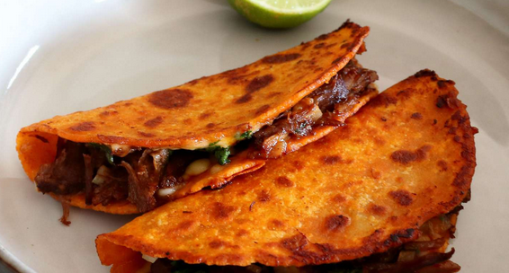

Beef Birria Queso Tacos with Consommé
Birria tacos are so delicious and this recipe is my take on the world's most trendy taco. Seriously, when you make these, you'll understand what all the fuss is about. Start with a batch of my beef birria and use some of the sauce in these shredded beef tacos with cheese. A super savory, aromatic consommé is served on the side for dipping.
- Prep Time: 20 mins
- Cook Time: 40 mins
- Total Time: 1hr
- Servings: 4
- Yield: 8 tacos
Ingredients
Consommé:
- 2 cups reserved sauce from beef birria recipe
- 1 cup chicken broth
- ¼ cup diced carrots
- ¼ cup diced celery
- ½ cup diced cabbage
Tacos:
- 3 tablespoons reserved beef fat from beef birria recipe, or more as needed
- 8 (5 inch) corn tortillas
- 2 cups freshly grated Monterey Jack cheese
- 2 cups shredded Beef Birria
- 4 tablespoons chopped white onion, or to taste, divided
- 4 tablespoons chopped fresh cilantro, or to taste, divided
- 1 medium lime, cut into 4 wedges
Instructions
Step 1
To make the consommé: Stir beef birria sauce, chicken broth, carrots, celery, and cabbage together in a saucepan over high heat. Bring to a simmer, then reduce the heat to medium-low and simmer, occasionally brushing the caramelized bits (fond) off the side with the hot liquid, until vegetables are nice and tender and consommé has reached the desired consistency, about 20 minutes. Reduce the heat to low and keep hot while you prepare the tacos.
Step 2
To make the tacos: Heat some reserved beef fat in a large skillet over medium heat until melted. Add two tortillas and flip with a spatula until generously coated in fat. Toast briefly until golden brown, then cover with Monterey Jack cheese and some shredded beef. Drizzle each taco with about 1 tablespoon consommé liquid, then top with some white onion and cilantro.
Step 3
Fold tacos in half and press gently. Continue to cook, flipping back and forth, until browned and crispy, 2 to 3 minutes. Transfer to a plate and repeat to make remaining tacos, adding more fat if necessary.
Step 4
Ladle consommé into a bowl and garnish with any remaining white onion and cilantro. Squeeze lime wedges into consommé and serve with tacos.
Chef's Notes
Here is my recipe for Beef Birria.
When making the consommé, you can use beef broth instead of chicken broth.
Shred beef to the desired consistency, but the finer the beef is shredded, the better it will absorb the liquid and the juicier your taco will be.
Nutrition Facts (per serving)
Calories: 337
Fat: 19g
Carbs: 27g
Protein: 17g